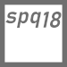

Liga-te à NOVA ERA
📡: (100.1 MHz) (101.3 MHz)

Liga-te à CIDADE FM
📡: (107.2 MHz) (104.4 MHz)

Liga-te à CDD HIPHOP
📡: (ONLINE)
Liga-te à CDD LATINA
📡: (ONLINE)
Liga-te à SW
📡: (102.7 MHz)
Liga-te à BATIDA FM
📡: (94.3 MHz)
Liga-te à MEGAHITS
📡: (90.6 MHz)

Liga-te à SMOOTH FM
📡: (89.5 MHz)

Liga-te à ANTENA 1
📡: (96.7 MHz)

Liga-te à ANTENA 2
📡: (92.5 MHz)
Liga-te à ANTENA 3
📡: (100.4 MHz)
Liga-te à RDP AFRICA
📡: (91.5 MHz)

Liga-te à RFM
📡: (104.1 MHz)

Liga-te à COMERCIAL
📡: (97.7 MHz)

Liga-te à M80
📡: (90.0 MHz) (105.8 MHz)
Liga-te à FUNDAÇÃO
📡: (95.8 MHz)
Liga-te à DIANA FM
📡: (94.1 MHz)
Liga-te à TELEFONIA
📡: (103.2 MHz)
Liga-te à default
📡: (---.- MHz)
Liga-te à 101.1 THE BEAT
📡: (Nashville, TN)